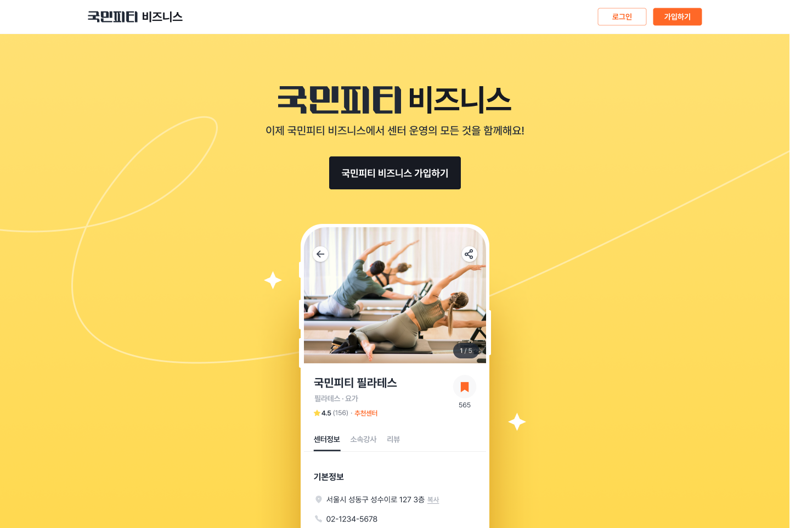

국민피티 파트너
2021.07 - 2023.10

📌 Summary
개인 운동 강사와 운동 센터가 파트너 입점 신청을 통해 지역 기반으로 고객을 매칭받고, 운동 관련 사업을 운영 및 관리할 수 있도록 지원하는 웹 사이트(국민피티 파트너)
- •국민피티에 파트너 관리 시스템 부재, 파트너 웹 플랫폼 구축 필요
- •리덕스 보일러플레이트 코드의 복잡함을 해결하기 위해 Redux Toolkit(RTK)을 도입하여 상태 관리 코드를 간결하게 개선
- •복잡한 폼 관리 위해 react-hook-form 도입을 통한 폼 상태 관리 간소화 및 개발 시간 단축
- •피드형 콘텐츠를 위해 Intersection Observer로 무한 스크롤 구현
🤔 Background
- 국민피티 서비스에는 파트너(개인 운동 강사, 운동 센터)를 위한 관리 시스템이 존재하지 않아, 운영팀이 모든 입점 및 센터 관리를 수작업으로 진행해야 했습니다. 이러한 이유로 파트너가 플랫폼을 통해 입점 신청을 하고 센터를 관리할 수 있는 시스템이 필요했습니다.
- 리덕스에서 하나의 기능을 추가할 때마다 반복적으로 작성해야 하는 보일러플레이트 코드(액션 생성자, 리듀서, 상태 업데이트 로직) 때문에 코드의 복잡도가 증가하고 생산성이 저하되는 문제가 발생했습니다.
- 센터 관련 정보를 입력해야 하는 여러 페이지(입점 신청, 센터 정보 입력 등)에서 다양한 폼 형태가 요구되었고, 이로 인해 폼 상태 관리가 복잡해져 이 상태들을 쉽게 관리할 수 있는 방법을 고민하게 되었습니다.
🔍 Meaning
•리덕스 보일러플레이트 코드의 복잡함을 해결하기 위해 Redux Toolkit(RTK)을 도입
- 반복적인 보일러플레이트 코드 작성을 개선하기 위해 Redux Toolkit(RTK)을 도입하여 createSlice와 같은 내장 도구를 활용해 코드 작성량을 줄이고, 상태 관리 로직을 자동화했습니다. 덕분에 코드의 가독성과 유지보수성이 개선되었으며, 비동기 처리와 상태 업데이트가 더욱 직관적으로 이루어졌습니다.
•복잡한 폼 상태 관리를 위한 react-hook-form 도입
- 복잡한 상태 관리를 위해 여러 가지 방법을 찾아보다가 react-hook-form이라는 라이브러리를 알게 되었고, 이를 도입하게 되었습니다. 초반에는 모든 폼을 마이그레이션해야 해서 많은 시간이 소요되었지만, 점차 폼 상태를 더 쉽게 관리할 수 있었고, isValid, isDirty 등 제공되는 다양한 기능 덕분에 개발 시간이 단축되었습니다.
•Intersection Observer를 활용한 무한 스크롤 구현
- 센터 관리 기능 중 하나인 "센터 새소식"은 피드형 콘텐츠로, 무한 스크롤 기능이 포함된 페이지였습니다. 무한 스크롤 구현을 위한 여러 방법을 학습한 후, 라이브러리 없이 Intersection Observer를 활용하여 무한 스크롤을 구현할 수 있었습니다.
👩🌾 Responsibilities
기여도 : 50%
- •입점 신청
- •센터 관련 기능(센터 소개, 강사 관리, FAQ 관리, 리뷰 관리 등)
🔨 Technology Stack(s)
- React
- Typescript
- Next.js
- Redux
- Redux Toolkit(RTK)
- Redux-saga
- Styled-components
- React-hook-form